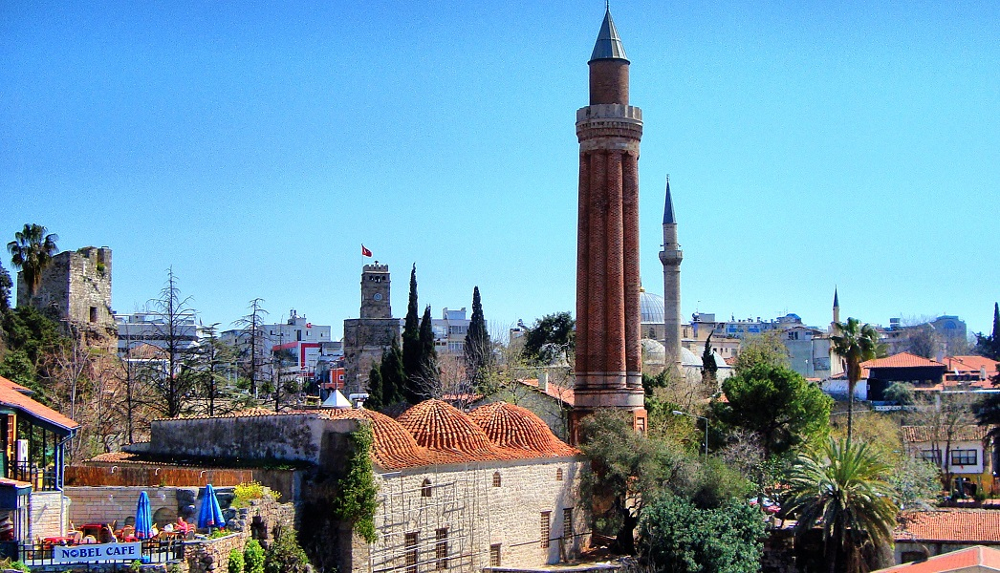
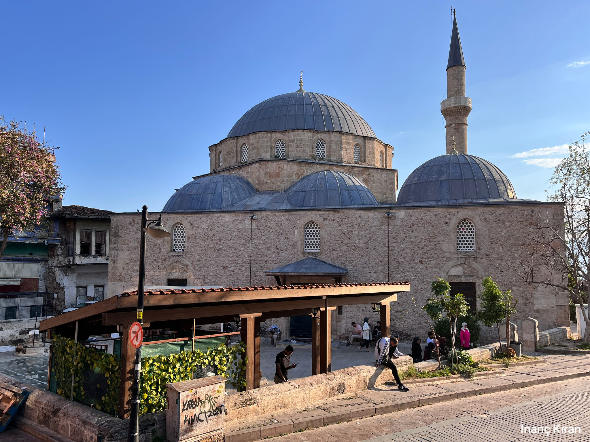
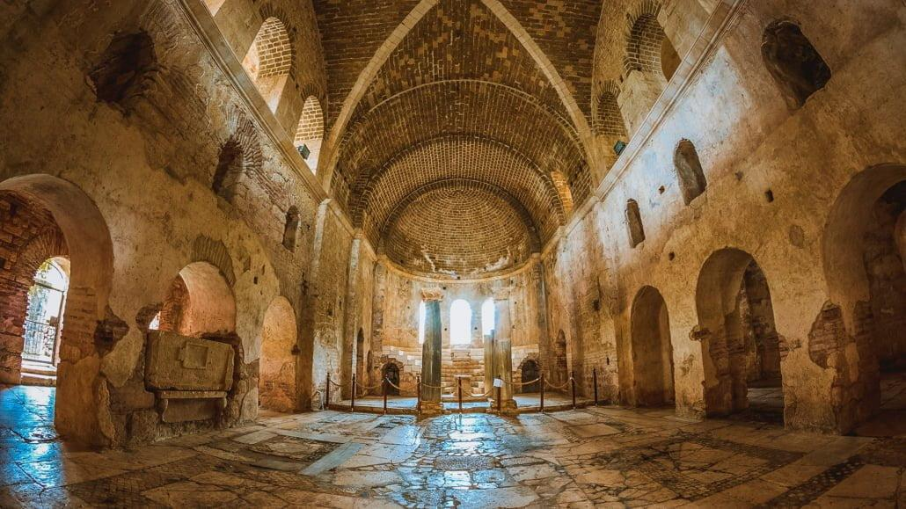
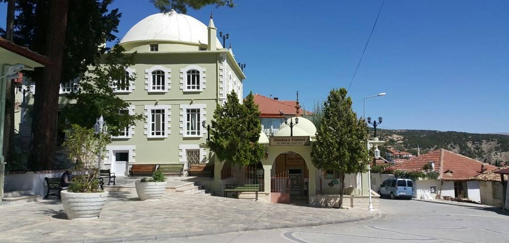
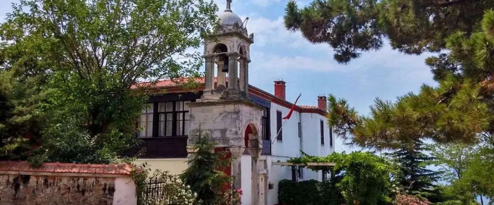

Antalya’nın simgelerinden biri olan bu cami, Selçuklu döneminden kalma özgün mimarisiyle dikkat çeker.
Adres: Selçuk Mah., Muratpaşa/Antalya
Ziyaret: Her gün açık
Giriş: Ücretsiz

Osmanlı dönemi izleri taşıyan bu cami, merkezi konumu ve zarif hat sanatı örnekleriyle öne çıkar.
Adres: Cumhuriyet Mah., Kaleiçi, Muratpaşa/Antalya
Ziyaret: Her gün
Giriş: Ücretsiz

Noel Baba olarak bilinen Aziz Nikolaos’un yaşadığı yer olan bu tarihi kilise, Hristiyan dünyası için önemli bir hac merkezidir.
Adres: Demre/Antalya
Ziyaret Saatleri: 08:30 – 19:00
Giriş: Ücretli (Tam: 90 TL)

Osmanlı dönemi mutasavvıflarından Sinan-ı Ümmi’ye ait türbe, huzurlu atmosferiyle ziyaretçileri ağırlar.
Adres: Muratpaşa Mah., Antalya Merkez
Ziyaret: Her gün
Giriş: Ücretsiz

Kaş Limanı çevresinde yer alan Aya Yorgi Kilisesi, küçük yapısına rağmen tarihi ve mimari önemiyle öne çıkar.
Adres: Kaş/Antalya
Ziyaret: Dışarıdan görülebilir
Giriş: Ücretsiz